One file it reads first and writes last. A crew where no agent grades its own homework. Hooks that make both non-optional. Extracted from a 53-repo fleet where it has run every day for months.
$ npx agent-brain-kit setupRead the brain, do the work, write the brain. Step three is the one everybody skips, and skipping it is what makes step one worthless. brain-kit makes skipping it fail a hook.
The agent on the right is not smarter. The answer was written down once, it read the file, and the crew caught a test that never ran.

A small sample repo, the published package, and one real Claude Code session given only the prompt setup suggests. The session also wrote a changelog entry, a "left off" pointer and a new date without being asked, because the loop told it to. 60 → 85. §5 stays empty until something bites.
Every line is the command's real output, from these raw captures. The 74-second session is sped up and its summary cut to two of its own sentences.
Seven Claude Code subagents with one rule between them: the agent that wrote the code never certifies it. QA proves it runs. Review judges if it's good. Either one sends it back with the exact miss.
Maps the codebase before anyone plans. Never writes a file.
Turns a spec into phased tasks, and appends a QA task and a Review task to every phase. Always.
Implements exactly one scoped task. Out-of-scope writes are a review failure.
Writes the tests the builder doesn't get to write for itself.
Trusts nothing it didn't run. Re-runs every check from a clean state. Returns VALIDATED or the exact failures.
Runs only after QA passes. Grades against a rubric. Below full marks anywhere means revise.
Answers what the codebase can't with one sourced report. Never touches product code.
Brain-check on session end, a gate that says what it skipped, secret scan, guard rails.
Not a weekend demo. Counted from the private fleet this kit was extracted from — names removed, numbers not. How each number was counted →
Every one of these was learned the hard way exactly once, then written into a brain so no session ever paid for it again. Read all of them →
A vault CLI passed typecheck, lint and every test, then crashed the first time anyone ran it: a value import from a workspace barrel that only real Node ESM rejects.
QA and review signed off. The first real click opened a blank session: a list-valued CLI flag had swallowed the brief.
“1 failed” printed right above “exited with code 0”. The exit code was tail’s, not the suite’s.
'\n', got nothing on CRLF.A markdown parser returned zero sections on a Windows-written file: a blank dashboard, not an error.
Misnamed migration files are skipped with a polite message and a clean exit. Four repos documented that as their migrate command.
The GitHub contents API stops inlining files at 1 MB. The most active product’s brain crossed it and went “unavailable” every day.
This is the real doctor, the same code the CLI runs, here in your browser. Enter any public GitHub repo, or paste your own BRAIN.md and CLAUDE.md / AGENTS.md. Pasted text never leaves this page.
Scores update as you type. Nothing is uploaded.
npx agent-brain-kit doctor exits 1 below 70.Creates BRAIN.md, the loop in .claude/CLAUDE.md, the crew and the hooks. Never overwrites a file you already have.
npx agent-brain-kit setupOpen Claude Code and ask it to fill BRAIN.md §1 and §2 from the codebase. From then on it maintains the rest itself.
Score the brain and get a one-line fix for every miss.
npx agent-brain-kit doctor"A brain that's updated usually is worse than useless — you can't trust it, so you re-investigate anyway. Read every time. Write every time."